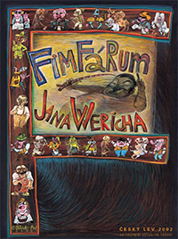

Fimfárum Jana Wericha (č:2001)
Obsah:

Soubor moderních pohádek Jana Wericha, které mají za úkol nejen pobavit, ale ukázat život obyčejných lidí, upozornit na jejich hloupost a vzít si z toho ponaučení. Vše krásně dokresluje podmanivé vyprávění pana Wericha.
Režie a scénář:
Vlasta Pospíšilová a Aurel Klimt, Jiří Kubíček a Aurel Klimt
Předloha:
Jan Werich - kniha
Kamera:
Vladimír Malík a Zdeněk Pospíšil
Hrají:
Jan Werich a Ota Jirák